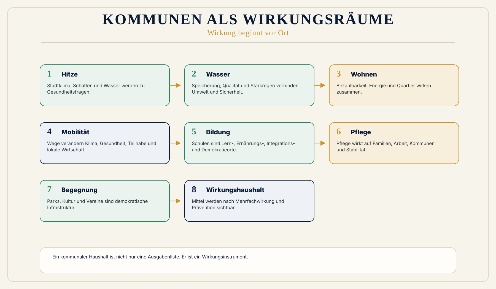

Silo-Steuerung
Kommunale Steuerung arbeitet häufig in Silos: Bau, Soziales, Umwelt, Mobilität, Gesundheit, Bildung, Sicherheit.
 Wirkungsökonomie
Wirkungsökonomie
Für wen · Kommunen
Wirkung beginnt vor Ort.
Kommunen spüren, was abstrakte Politik und Märkte erzeugen: Wohnungsdruck, Hitze, Wasserstress, Pflegeengpässe, Schulwege, Einsamkeit, Mobilität, Energie, Integration, Vereinsleben, Jugendräume, Kultur, Sicherheit und Vertrauen.
Die Wirkungsökonomie macht diese Zusammenhänge steuerbar.
Ein kommunaler Haushalt ist nicht nur eine Ausgabenliste. Er ist ein Wirkungsinstrument.
Warum diese Perspektive wichtig ist
Kommunen müssen immer mehr Folgen reparieren, die sie nicht allein verursacht haben.
Falsche Preislogik, Wohnspekulation, Klimafolgen, soziale Spaltung, Pflegekrisen, Verkehrsprobleme und digitale Abhängigkeiten landen am Ende im Rathaus, in Schulen, Kliniken, Vereinen, Stadtwerken, Bauämtern und Sozialdiensten.
Was heute falsch läuft
Kommunale Steuerung arbeitet häufig in Silos: Bau, Soziales, Umwelt, Mobilität, Gesundheit, Bildung, Sicherheit.
Ein Stadtbaum wirkt auf Hitze, Wasser, Gesundheit, Aufenthaltsqualität, Begegnung und Quartiersstabilität.
Eine Schule wirkt auf Bildung, Ernährung, Gesundheit, Integration, Eltern, Mobilität und Demokratie.
Warum Reparatur nicht reicht
ESG, Reporting, Nachhaltigkeitsberatung oder Reparaturpolitik können Anschlussräume sein. Sie lösen den Kernfehler aber nicht, wenn sie Wirkung nur beschreiben, nachträglich dokumentieren oder Schäden erst reparieren.
Die Wirkungsökonomie setzt früher an: beim Maßstab, bei der Fehlsteuerung und bei der Rückkopplung in Preise, Kapital, Haushalte, Management, Medien und Entscheidungen.
WÖk-Verschiebung
Die WÖk macht kommunale Mehrfachwirkung sichtbar. Mittel werden nicht nur nach Ressort, Titel und Pflichtaufgabe betrachtet, sondern nach Netto-Wirkung, Prävention, Resilienz und sozialer Stabilität.
Wirkungshaushalte zeigen, welche Investitionen mehrere Wirkungsräume gleichzeitig stärken.
Konkreter Gewinn
Was nicht passiert
Die WÖk macht Kommunen nicht zu Bewertungsmaschinen.
Sie ersetzt keine demokratische Kommunalpolitik.
Sie hilft, Wirkung sichtbar zu machen, Zielkonflikte zu benennen und öffentliche Mittel besser zu begründen.
Wirkungspfad
Konkretes Beispiel
Ein Park ist keine Dekoration. Er ist Hitzeschutz, Wasserspeicher, Bewegungsraum, Begegnungsraum, psychischer Entlastungsraum, Biodiversitätsfläche und demokratische Alltagsinfrastruktur.
Visual
Stadtplanartige WÖk-Karte mit Knoten: Wohnen, Schule, Pflege, Park, Mobilität, Wasser, Energie, Kultur, Beteiligung. Linien zeigen Mehrfachwirkung.

Vertiefung
Die nächste Frage lautet nicht, wie diese Zielgruppe nachhaltiger wird. Sie lautet: Welche alte Steuerungslogik erzeugt das Problem, und wie verändert Wirkung die Logik selbst?
Quellenbasis / Status